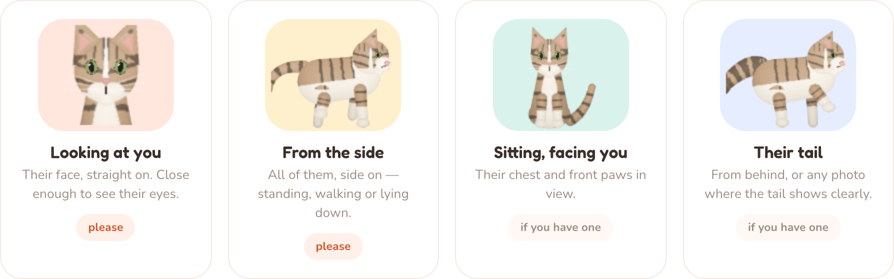
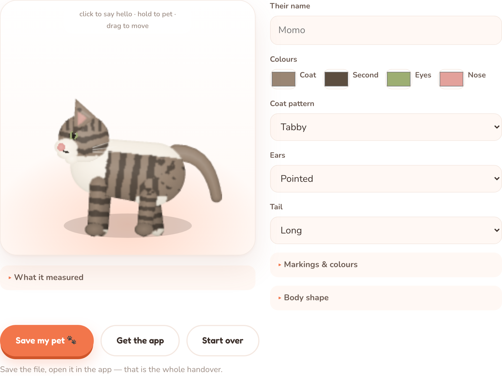

You give it a few photos, it draws your cat or dog, and they live on your desktop. About a minute, start to finish.
Pick either. Your photos are read on your own machine both times — nothing is uploaded, and there is no account.
Fewest steps
Download it for Mac or Windows and open it.
It greets you. Click Add photos.
Add the photos, check the likeness, done — they walk onto your desktop.
Nothing to install first
Make your pet here on the site.
Save the pet file it gives you.
Download the app, and open that file in it.
Both routes ask for the same four. They exist because between them they show every part of an animal the drawing needs — the first two are the important ones, and one ten-second video can stand in for all four.


It is your pet, as about thirty numbers — their colours, their markings, their shape. No photographs are in it. It is what the browser hands to the app, and it is small enough to email to someone. If you make your pet inside the app, there is no file to handle at all.
Into the menu bar on a Mac, or the system tray on Windows — the little paw icon. It has no window of its own and no Dock icon, because it is only ever your pet on the desktop. Click the paw to add another, resize them, hide them for a while, or quit.